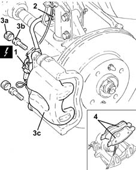
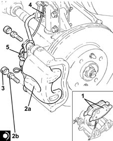

3310A60 front brake pads - replace
- Path
- Procedures > 33 BRAKING SYSTEM > 3310 DISC BRAKES > 3310A FRONT DISC BRAKES > 3310A60 front brake pads - replace
- Kind
- repair procedure (removal / refitting; the operation number is the code)
- Applies to
- all engines; all production periods
- Interactive page
- https://sloeber94.github.io/elrnDB-lYpsln/en/#/2429157
Applies to: all engines; all production periods
 Removing
Removing
 Refitting
RefittingPosition the vehicle on the ramp.
Ensure that the ignition key is in OFF position, then disconnect the battery negative terminal (-).
 | Name | Connector |
|---|---|---|
- | Battery |
Proceed with removal 4450B12 front or rear wheels (two) - r+r .
1. Disconnect the electrical connection for the brake pad wear sensor.
2. Release the block of the hose to the front brake caliper from the fastener on the front shock absorber.
3. Remove plugs (3a), undo the bolts (3b) and move the front brake caliper assembly (3c) aside.
4. Remove the front brake pads from the brake caliper.
Repeat the above operations for the remaining brake caliper.

Applies to: all engines; all production periods
Refitting
Removing1. Refit the new front brake pads.
2. Refit front brake caliper assembly (2a) and secure by tightening bolts (2b) to the specified torque.
Fastening | Component | Ø | Value (daNm) | |
|---|---|---|---|---|
2b | - | - | - | - |
3. Refit the front brake caliper bolt plugs.
4. Secure the block of the hose to the front brake caliper to the fastener on the front shock absorber.
5. Connect the electrical connection for the brake pad wear sensor.
Repeat the above operations for the remaining brake caliper.

Applies to: all engines; all production periods
Proceed with refitting 4450B12 front or rear wheels (two) - r+r .
Connect the negative (-) battery terminal.
Remove the car from the ramps.